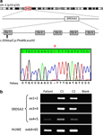

Introduction
We have recently reported on a remotely consanguineous Iranian family of three affected siblings who suffered from a novel mental retardation syndrome characterized by severe mental retardation, cataract, coloboma and kyphosis (Kahrizi syndrome, OMIM 612713).1 Linkage analysis in this family revealed a gene locus in the pericentromeric region of chromosome 4.
Here, we report on the results of mutation screening in the genes of this interval by next-generation sequencing and on the identification of a frameshift mutation in the steroid 5α-reductase type 3 gene SRD5A3. In combination with other recent observations, this finding indicates that the clinical spectrum of Kahrizi syndrome is wide, and that mutations in the SRD5A3 gene lead to defective protein glycosylation, even though this feature may be missed upon routine testing.
Methods
Homozygosity mapping in this family had revealed a single linkage 10.4-Mb interval in the pericentromeric region of chromosome 4 flanked by markers rs728293 (chr4: 47052440, HG18) and rs1105434 (chr4: 57488508, HG18).1
Library preparation, DNA enrichment and Illumina/Solexa sequencing
For enrichment of the coding regions of all RefSeq genes and flanking intronic sequences of this interval, complementary oligonucleotide baits were designed for all 602 exons including 30 bp extensions at either end, using Agilent's eArray version 6.4 (Agilent, Santa Clara, CA, USA). On the 244 k sequence capture array, each of these oligonucleotides was represented four times. Repetitive sequences were not excluded. After fragmentation of the sample of genomic DNA of the index patient (II:4),1 DNA fragments were repaired to generate blunt ends by T4 polymerase and Klenow DNA polymerase, and phosphorylated with T4 polynucleotide kinase. We measured the DNA concentration with a Nanodrop 7500 spectrophotometer (Nanodrop Technologies, Wilmington, DE, USA), and a 1 μl aliquot was diluted to 10 nM.
After adding a single ‘A’ base to the 3′ end of the DNA fragments using Klenow exo (3′ to 5′ exo minus), we ligated Solexa (Illumina, San Diego, CA, USA) adaptors (with a ‘T’ overhang) with the DNA fragments using DNA ligase. Ligated products (size range 150–200 bp) were gel purified on 2% agarose, followed by 18 cycles of PCR-amplification.
The hybridization of 20 μg of library DNA and the subsequent sequence capture was performed according to the manufacturers' recommendations (Agilent). Adaptor-ligated DNA was hybridized to the surface of one lane of a flow cell, and DNA clusters were generated using the Illumina/Solexa cluster station (Illumina), followed by 76 cycles of sequencing on the Illumina/Solexa 1G analyzer (Illumina).
Data analysis
Data analysis was performed as described previously.2
RT-analysis
To check for SRD5A3 expression, total RNA was extracted from Epstein–Barr virus-transformed lymphoblastoid cell lines of the index patient and two controls by using the TRIzol reagent (Invitrogen, Carlsbad, CA, USA), and cDNA was generated by using the SuperScript III Reverse Transcriptase (Invitrogen) together with random hexamer primers. This cDNA was used to perform PCRs with a series of primer combinations for two adjacent exon sequences and together encompassing the entire gene (primer sequences are available upon request).
Results
Illumina/Solexa sequencing
In total, 25 million single-end 76 nucleotide reads were generated, which allowed sufficient coverage of ~94% of the target sequence. In all, 167 single-nucleotide variants matched variants from the references sequence, 13 of which were not annotated in the dbSNP database. These changes were either silent changes in the coding regions or changes in non-coding regions. A total of 31 indels were detected, 22 of which were novel, and all but one (in exon 1 of SRD5A3) were located in non-coding regions. The results of next-generation sequencing analysis of this interval are summarized in Table 1.
Table 1 - Summary of the results of next generation sequencing after exon enrichment of the interval on chromosome 4.
 Full table
Full table Mutation in SRD5A3
The only remaining variant in coding regions of this interval was the duplication of one cytosine in exon 1 of SRD5A3. According to NM_024592.3, the position of this change in the protein is c.203dupC (p.Phe69LeufsX2). The genomic position of this duplication is chr4:55907464dupC (HG18).
This mutation was subsequently confirmed by conventional Sanger sequencing in the index patient and his two affected siblings (II:5 and II:6 according to Fig 2a in Kahrizi et al, 20091; Figure 1a). The parents and two healthy siblings (II:1 and II:3) were heterozygous carriers of this duplication. We failed to detect this mutation in 366 control chromosomes from healthy Iranian and German control individuals.
Figure 1.
(a) Graphical representation of the linkage interval in the pericentromeric region of chromosome 4 (red box), the position of SRD5A3, the position of the mutation and partial chromatogram of exon 1 of the index patient. The asterisk denotes the duplication of one cytosine (c.203dupC;p.Phe69LeufsX2). (b) Results of the RT-PCR using RNA derived from a lymphoblastoid cell line of the index patient showing absence (ex 1–4) or reduced (ex 4–5) expression of SRD5A3 transcripts. HUWE was used as an internal control. The color reproduction of the figure is available on the html full text version of the paper.
Full figure and legend (110K)RT-PCR
RT-PCR using RNA extracted from a lymphoblastoid cell line of the index patient showed missing or reduced expression of the five SRD5A3 exons (Figure 1b).
Discussion
In a consanguineous family of three affected siblings who were suffering from a complex congenital disorder, homozygosity mapping had revealed a linkage interval on chromosome 4, and mutation screening of the coding regions in this interval by exon enrichment and Illumina/Solexa sequencing revealed a frameshift mutation in SRD5A3.
Mutations in SRD5A3 have been identified independent of this study in other patients and families with partially overlapping clinical features and congenital defects of glycosylation.3 SRD5A3 encodes steroid 5α-reductase type 3, an enzyme which is required for the conversion of polyprenol to dolichol, the lipid anchor for N-glycosylation in the endoplasmic reticulum.3 SRD5A3 is highly expressed in fetal brain.3
Cantagrel and colleagues3 and Morava et al (personal communication) identified a total of seven different SRD5A3 mutations in nine families. Most of these cases were ascertained by abnormal transferrin isoelectric focussing patterns suggesting a type I congenital defect of glycosylation (‘CDG type Ix’, OMIM 212067).4 In the family reported here, no clear abnormal transferrin mobility had been detected in two independent routine tests for CDG screening. Interestingly, in the family reported by Al-Gazali et al,5 now also known to carry an SRD5A3 mutation,3 repeated CDG testing had failed to detect any abnormality, too. Thus, in patients with clinical features suggestive of Kahrizi syndrome, SRD5A3 mutations should be ruled out even if CDG testing is negative.
Apart from severe mental retardation which was observed in all patients with SRD5A3 mutations, the presence of additional clinical features seems to vary considerably, not only between different families, but also within families. Cerebellar ataxia was present in most patients, but malformation of the cerebellum or the cerebellar vermis were absent in the original family with Kahrizi syndrome and only detectable in some patients by MRI investigation. Ophthalmic problems (cataract, iris coloboma, optic nerve hypoplasia) were frequently observed. Cataracts were only present in two of the patients of the Cantagrel/Morava cohort.3 In the family reported here, all three siblings developed cataracts at the age of about 17 years. As the oldest patient in the Cantagrel/Morava cohort was only 12-years old, it may be expected that other patients will also develop cataracts as they grow older.
The syndrome reported here has some phenotypic overlap with Peter's plus syndrome (OMIM 261540), an autosomal recessive disorder which is caused by mutations in the gene encoding B3GALTL, a putative glycosyltransferase.6 Also, in patients with Peter's plus syndrome, routine CDG testing by isoelectric focussing of transferrin failed to reveal any abnormalities. This example, and the family reported here, may serve as a reminder that a normal isoelectric focussing of transferrin result does not always exclude glycosylation defects, and – based on the clinical phenotype – additional molecular genetic tests may be necessary.
In summary, the detection of an SRD5A3 mutation in this family shows that the recently described Kahrizi syndrome (OMIM 612713) and a specific CDG type Ix subtype (OMIM 212067) are allelic disorders. This study also demonstrates the effectiveness of combining exon enrichment and next generation sequencing technology for detecting causative gene defects.
References
- Kahrizi K, Najmabadi H, Kariminejad R et al: An autosomal recessive syndrome of severe mental retardation, cataract, coloboma and kyphosis maps to the pericentromeric region of chromosome 4. Eur J Hum Genet 2009; 17: 125–128. | Article | PubMed | ChemPort |
- Hu H, Wrogemann K, Kalscheuer V et al: Mutation screening in 86 known X-linked mental retardation genes by droplet-based multiplex PCR and massive parallel sequencing. HUGO J 2009; 1: 41–49. | Article
- Cantagrel V, Lefeber DJ, Ng BG et al: The SRD5A3 gene is required for the conversion of polyprenol to dolichol, essential for N-linked protein glycosylation. Cell 2010; 142: 203–217. | Article | PubMed | ChemPort |
- Morava E, Wosik H, Karteszi J et al: Congenital disorder of glycosylation type Ix: review of clinical spectrum and diagnostic steps. J Inherit Metab Dis 2008; 31: 450–456. | Article | PubMed | ChemPort |
- Al-Gazali L, Hertecant J, Algawi K et al: A new autosomal recessive syndrome of ocular colobomas, ichthyosis, brain malformations and endocrine abnormalities in an inbred Emirati family. Am J Med Genet A 2008; 146: 813–819. | PubMed | ChemPort |
- Oberstein L: Peters plus syndrome is caused by mutations in B3GALTL, a putative glycosyltransferase (vol 79, pg 562, 2006). Am J Hum Genet 2006; 79: 985. | Article
Acknowledgements
We are grateful to the patients and the parents of the family for their cooperation. We thank Vera Kalscheuer and Stefan Haas for bioinformatic support, and Ines Müller, Corinna Menzel and Melanie Bienek for technical assistance. This work was supported by the Iranian National Science Foundation (to HN), the Max Planck Innovation Funds, and the German Federal Ministry of Education and Research through the NGFNplus – MRNET (to HHR).